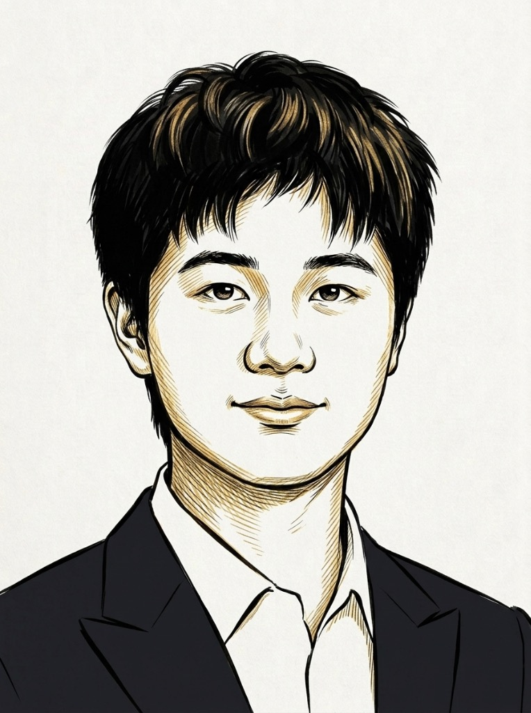
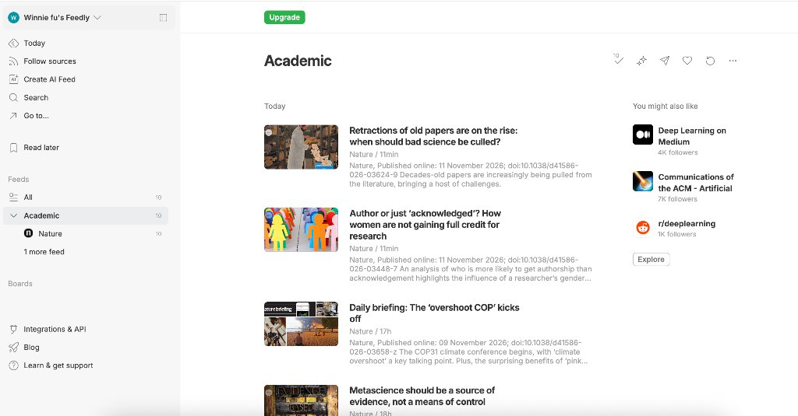
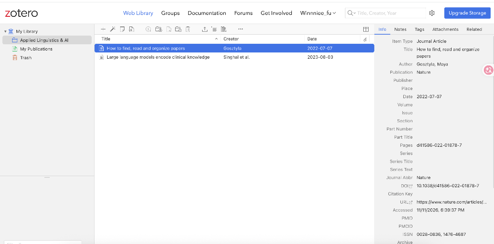

Dr Simon Wang is Lecturer in English and Innovation Officer at the Language Centre, Hong Kong Baptist University. This series documents his experiments with AI technologies, and his exploration of how professional communication researchers, teachers and practitioners can communicate more effectively with large language models. Entries are written collaboratively: the AI model drafts the text, he directs and corrects it, and he reviews every sentence as gatekeeper before taking full responsibility for what is published. The code shared in these entries is open-sourced in the series repository.
All assertions, experiments and outcomes in these entries are his own; they are not an endorsement by IEEE, IEEE ProComm, or IEEE as a whole.
Entry 2
Prompt & Praxis
Experiments in AI and professional communication
A working series for IEEE ProComm · Simon Wang, Hong Kong Baptist University
Introduction to Agentic AI: a hands-on lesson for academic literature management
RSS, an open API and two steps of a researcher’s system, handed to instruments that do not have hands
Guest AuthorsWenyun (Winnie) FU (Journalism, HKBU)·Zian (Andy) Zheng (Computer Science, HKBU)— click to collapse— click to expand▾
Wenyun (Winnie) FU Co-Author
Final year undergraduate student · Department of Journalism School of Communication, Hong Kong Baptist University
Co-author of this article. Explores human-in-the-loop AI writing workflows, investigative source verification, and academic literature synthesis through a journalism lens.

Zian (Andy) Zheng Co-Author
Final year undergraduate student · Department of Computer Science Faculty of Science, Hong Kong Baptist University
Co-author of this article. Focuses on agentic AI pipelines, software prototyping, and API orchestration, connecting natural language instructions with computing instruments.
A researcher’s hundred open tabs, a column that told her to build a system, and the two steps where most systems still leak: now handed to instruments that do not have hands.
Part 1 · A hundred open tabs: the problem every researcher recognises
In July 2022, Maya Gosztyla wrote in the Nature Career Column about the evening her laptop crashed. Over a hundred papers sat waiting across open browser tabs, each tab a vague promise to read later. When the screen went black, her first reaction was relief. The crash settled a decision she had put off for months: build a workable system, or spend another term hunting down papers she had already found.1
Gosztyla broke literature work into four stages: find, manage, read, organize. Finding is where the leaks begin: papers bookmarked on impulse, journal alerts burying an inbox, and reading lists abandoned on Friday afternoon. Managing is where those finds either enter a working library or disappear. The last two stages, reading and organizing, belong to human judgement. No script can read a paper for you.
This entry starts with the first two stages, using the conventional desktop tools Gosztyla recommended.
Part 2 · The solutions she proposed (no AI in sight)
Her fixes were conventional, and they still work.
Step 1 — find
Stop chasing papers across the web; subscribe to them.
The protocol behind this is RSS (Really Simple Syndication). Journals publish feed files at fixed web addresses whenever a new issue appears. An RSS reader checks those addresses on a timer and collects new articles into a single stream. You add a source once, and new titles arrive on your desk without cluttering your inbox or vanishing during a browser crash.
Setting this up takes five minutes in a web reader like Feedly or Inoreader:
Add journal feeds. Click Follow Sources, paste a feed address, and file it under a collection like Academic. Practical starting feeds include Nature, Nature Communications, and arXiv cs.AI.
Run a morning scan. Glance through new titles over morning tea. Move promising papers to a Read Later board, then close the app.

Figure 1
Journal subscriptions in Feedly. An 'Academic' collection gathers incoming issues from Nature and arXiv cs.AI into one reading stream, keeping new papers in view without opening dozens of browser tabs.
When a project calls for exploring citation networks, tools like ResearchRabbit, Connected Papers, and Litmaps show which papers build on each other. The core habit remains simple: let incoming papers arrive on a predictable schedule instead of searching from scratch between meetings.
Step 2 — manage
If you are still formatting references manually, stop right now.
That was Gosztyla’s immediate advice in Nature. Reference managers are often introduced purely as citation formatters, called on right before manuscript submission. In practice, a reference manager serves as a personal research database. It stores full PDFs alongside verified records, keeps notes linked to specific pages, integrates with word processors, and captures papers from the web in one click.
We use Zotero (free, open source, zotero.org) throughout this series. Because Zotero is open source, its underlying metadata extractors and citation engines can be inspected and scripted. Commercial managers like Mendeley and EndNote follow similar patterns, but Zotero gives scholars permanent ownership of their data.
Zotero handles four practical needs across the managing loop:
Action
How it works in Zotero
Why it matters
Save
One click via the browser connector; or by DOI, PubMed ID, and PDF drag-and-drop.
Captures title, authors, journal metadata, and full PDF without re-typing.
Organize
File items into project Collections, assign tags, and run saved searches.
Keeps sources sorted by project without duplicating local PDF files.
Annotate
Built-in PDF reader; highlights and page notes save directly into the record.
Notes stay attached to the bibliographic record permanently.
Cite
Word-processor plug-in for Microsoft Word, LibreOffice, and Google Docs.
Formats citations in any style and generates bibliographies automatically.
Hands-on DemoSaving a paper in Zotero (5 minutes)
Set up a free library on zotero.org (accessible via desktop app or Web Library) and install the Zotero Connector extension.
Create a project collection (for example, Applied Linguistics & AI).
Open any article page in your browser (such as Maya Gosztyla’s Nature column or an article on arXiv), and click the Zotero Connector icon in your toolbar.
The connector extracts verified bibliographic metadata (title, authors, publication date, DOI, abstract) and files the entry into your chosen collection.
Close the browser tab. The paper is safely recorded in your permanent research library.

Figure 2
Literature management in Zotero (Web Library). Incoming papers are filed into a project collection ('Applied Linguistics & AI' here), with complete bibliographic metadata, source URL, and DOI captured in a single click without manual re-typing.
Gosztyla’s working rule was crisp: the moment you decide a paper is worth reading, send it into the reference manager, and close the browser tab. Closing the tab is the entire discipline.
Two steps, two conventional tools, and one honest limitation: every action in Part 2 is operated by hand, on a screen, one click at a time. That physical boundary leads directly into Part 3.
Part 3 · GUI against API: the boundary Entry 1 already crossed
What the GUI is, and where it stops
Every tool in Part 2 relies on a graphical user interface (GUI): what you see is what you get. That visual clarity is its virtue: intuitive, friendly, allowing a newcomer to become productive within minutes.
It is also its boundary. A GUI displays one screen at a time, paced by human hands and eyes. How fast fingers can click and how long eyes can read before getting tired sets the speed. The screen cannot check for new papers while you teach class, and it cannot rerun yesterday’s search next week without re-typing. Gosztyla’s hundred open tabs were the natural outcome of working within those visual borders.
How Entry 1 crossed it
Entry 1 established a different principle: an AI agent sits between human language and computing instruments. You describe a task in ordinary sentences, and the agent orchestrates the underlying tools to execute multi-step workflows.
Entry 1 drew a boundary we preserve here: an agent is a workflow processor, not an authoritative information oracle. Its strength lies in action, not memory. This entry never asks a model what the literature says; it directs the agent to query verified scientific databases directly.
Code as the way past the boundary: the two instruments
Programmed code has neither hands nor eyes. It can execute a query at dawn, scan twenty-six thousand records while you make coffee, and rerun yesterday’s exact search next month without variation. A researcher’s effective reach expands from what hands can click during an afternoon to whatever can be formulated as a systematic task.
Two digital instruments carry that workload:
Instrument 1
An Application Programming Interface (API)
An API operates like a service counter with a fixed menu. You request structured data in a defined format, and the server returns exact, machine-readable records without chat. For example, this address is a live API call to OpenAlex:
Within seconds, it returns three verified papers with DOIs. On 8 November 2026, that query matched 26,881 publications across OpenAlex.2 No search box to click, and no open tabs to keep track of.
Instrument 2
Syndicated Feeds (RSS)
RSS works in the opposite direction. Instead of visiting dozens of journals, new tables of contents arrive automatically at an endpoint you choose. Try pointing your reader or agent here:
https://rss.arxiv.org/rss/cs.AI
While Part 2 treated RSS as a personal reading stream, in an agentic pipeline an agent watches the feed, compares incoming abstracts with your research criteria, and flags only relevant developments.
What the two instruments accomplish, in her context
Literature Step
Traditional GUI (Hands, one screen at a time)
Agent + API (Instruments doing the reaching)
1. Find
Manual keyword searches; alerts that flood the inbox; repeated query typing each week.
An agent queries OpenAlex via API on a set schedule, returning a deduplicated, DOI-verified list.
The query formats results into CSV and BibTeX tables, feeding directly into Zotero with records and PDFs filed together.
The GUI does not disappear. Rather, it returns to where human judgement belongs: reading critically, assessing evidence, and deciding what to build next.
In Part 4, we put this pipeline directly into practice using WorkBuddy.
Part 4 · How you do that, with WorkBuddy
The pipeline is published and free to take apart: the workshop/ folder carries the prompts, the script and the expected outputs. Two tracks — pick one.
Track A — write it from scratch
A1 — make it explain first (30 seconds). Paste:
I’m new to this. Before doing anything: tell me in three lines what this prompt would do, what you need from me, and what could go wrong. Don’t run it yet.
“Find the 10 most-cited papers on your topic published since year, from OpenAlex, and show me title, year, citations, and DOI.”
If it starts running without explaining, say “explain first.” You are training the workflow as much as using it.
A2 — your first query (2 minutes). Ask for the ten most-cited articles on your topic since a given year, as a table of title | year | citations | DOI, with mailto=your.email@example.com on the request — OpenAlex’s polite pool. House rule: do not invent or complete any row; if the API returns nothing, say so. Open one DOI; it must reach the paper.
A3 — keep it (3 minutes). Ask for found.csv and a Google Doc tab “Reading list — your topic” with Status and Notes columns. Close the hunting tabs. That close is the point.
A4 — hand it to Zotero (5 minutes). BibTeX export plus the menu steps to import, and it waits for your confirmation before acting. Zotero is free and open source; the record is yours.
A5 — build on it. Change one thing per run: topic, sort, or last week’s date window — that last one makes a weekly literature alert.
Send the link to your agent: “Describe what this code does and how I can reuse it for my own topic.”
Run Level 1, Level 2, Level 3 as printed.
Then break it on purpose — change the topic, the year, the sort. Reusing code means editing it.
One difference worth knowing: WorkBuddy returns tables in the chat; VS Code and Cursor work in a folder, so found.csv and found.bib land beside the code. The prompts are identical; the paste point changes.
Part 5 · Decisions, limits, what it is worth
Decisions. Two steps only, because an entry that does everything teaches nothing. Both instruments, because some literature should arrive by itself and some questions should be asked on demand. Remix over rebuild for Zotero: take one simpler module apart instead of writing a reference manager — its source is public, and its licence was checked before anything of ours was shared.
Limits. An agent asked to remember a paper invents one that sounds right; asked to fetch it, it cannot — so every value above arrives from OpenAlex or does not appear. A DOI proves a paper is real, not that its findings are right. RSS still needs a human to decide what deserves a click. And a public API stays free because its users are polite: one mailto, no hammering.3
Value. An afternoon of tab-hunting becomes a two-minute query, and the second run is free: this Friday’s search is last Friday’s script with a new date. The list that returns is already sorted and filed, yours to filter by project. Gosztyla’s answer to her own crisis was a system. This is that system’s first two steps, running on instruments a beginner can drive in an afternoon.
Closing · The cycle this starts
One query on one real topic returns a table too good not to open. The reader opens one. Tomorrow the same prompt returns something new, and the pipeline stops being a demo and becomes theirs. The platform first, the habit second — the reading, the notes and the organizing get picked up the same way, one working piece at a time.
Footnotes
1. Gosztyla, M. (2022). How to find, read and organize papers. Nature Careers, 07 July 2022. doi:10.1038/d41586-022-01878-7.
2. OpenAlex query verified 8 November 2026: 26,881 results for search=applied linguistics AI, from_publication_date:2026-01-01.
About this draft. Review copy, 10 November 2026, password protected. Companion code: workshop/. Reviewer: Bremen Vance. Comments on this draft stay closed until publication.